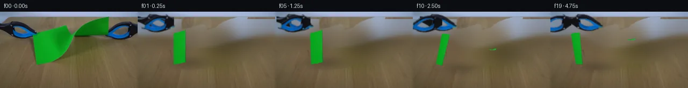

![首帧]()

Round 00
2026-11-05T20:58:48.740483+00:00像素候选变化代码 +579/−0inspection 更新
pixels ef0d4f2f19de0793 · code 06a34ff45e306ce4
查看本轮 generate.py 真实 diff
--- previous/generate.py
+++ current/generate.py
@@ -0,0 +1,579 @@
+#!/usr/bin/env python3
+"""PixelWorld case_0044: two grabbers pull a twisted green paper strip from
+opposite corners until it tears at the twist.
+
+Local pixel operations only. Frame 0 is a verbatim copy of first_frame.png.
+Frames 1..19: PBD/Verlet chain-net physics in (u,v) strip coordinates, with
+the real frame-0 paper pixels used as the warp texture. See METHOD.md.
+"""
+from pathlib import Path
+import numpy as np
+import cv2
+from PIL import Image, ImageDraw
+from scipy import ndimage
+from artifact_io import save as artifact_save
+
+ROOT = Path(__file__).parent
+rng = np.random.default_rng(44)
+
+# ---------------------------------------------------------------- frames
+orig = np.array(Image.open(ROOT / 'first_frame.png').convert('RGB'))
+H, W = orig.shape[:2]
+fR = orig[..., 0].astype(np.float32)
+fG = orig[..., 1].astype(np.float32)
+fB = orig[..., 2].astype(np.float32)
+lum = 0.3 * fR + 0.59 * fG + 0.11 * fB
+
+# ---------------------------------------------------------------- masks
+green01 = (fG > 110) & (fR < 100) & (fB < 100) & (fG - fR > 50)
+lab, nc = ndimage.label(green01)
+sizes = ndimage.sum(green01, lab, range(1, nc + 1))
+green = (lab == (1 + int(np.argmax(sizes)))).astype(np.uint8)
+black = (fR < 48) & (fG < 48) & (fB < 55)
+blue = (fB > 110) & (fB - fG > 40) & (fR < 90)
+tool_core = (black | blue).astype(np.uint8)
+tool_dil = cv2.dilate(tool_core, np.ones((5, 5), np.uint8), 1)
+green_dil = cv2.dilate(green, np.ones((5, 5), np.uint8), 1)
+
+yy, xx = np.mgrid[0:H, 0:W].astype(np.float32)
+
+
+def gfield(cx, cy, sx, sy):
+ return np.exp(-(((xx - cx) / sx) ** 2 + ((yy - cy) / sy) ** 2) / 2)
+
+
+# fitted soft-shadow field of frame 0 (used to locate pixels to regenerate)
+S0 = (0.24 * gfield(168, 62, 36, 20)
+ + 0.20 * gfield(95, 96, 24, 8)
+ + 0.12 * gfield(28, 62, 32, 10)
+ + 0.08 * gfield(225, 60, 30, 9))
+
+corridor = np.zeros((H, W), bool)
+corridor[14:56, 0:82] = True
+corridor[14:60, 186:W] = True
+wall0 = yy < 10
+table0 = yy > 11
+
+unknown = (green_dil.astype(bool) | tool_dil.astype(bool) | corridor
+ | ((S0 > 0.05) & table0))
+unknown &= ~wall0
+known = (~unknown).astype(np.float32)
+
+# ------------------------------------------------- background synthesis
+base = orig.astype(np.float32).copy()
+for _ in range(4):
+ wnum = cv2.GaussianBlur(known, (0, 0), 14)
+ num = cv2.GaussianBlur(base * known[..., None], (0, 0), 14)
+ fill = np.divide(num, wnum[..., None], where=wnum[..., None] > 1e-4)
+ upd = (unknown & ~wall0)[..., None]
+ base = np.where(upd, fill, base)
+
+clean = (known > 0) & (S0 < 0.03) & table0
+resid = orig.astype(np.float32) - base
+streak = np.zeros((W, 3), np.float32)
+for c in range(3):
+ for x in range(W):
+ v = resid[..., c][:, x][clean[:, x]]
+ streak[x, c] = v.mean() if len(v) > 6 else np.nan
+bad = ~np.isfinite(streak)
+if bad.any():
+ streak[bad] = np.nanmedian(streak, axis=0)
+streak = cv2.GaussianBlur(streak.T, (0, 0), 2.5).T
+streak -= streak.mean(axis=0, keepdims=True)
+
+noise = np.zeros((H, W, 3), np.float32)
+for c in range(3):
+ fine = resid[..., c][clean] - streak[..., c][np.where(clean)[1]]
+ sd = fine.std()
… diff truncated; 492 more lines …